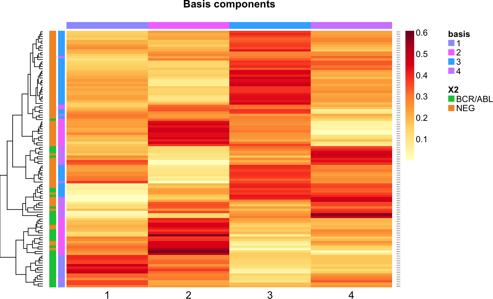

Exploring NMF and other views of high-dimensional multivariate data
Vincent J. Carey, stvjc at channing.harvard.edu
January 25, 2025
Source:vignettes/nmflook.Rmd
nmflook.RmdOverview
To improve my understanding of the role of the HALS algorithm for NMF analysis of genomic data, I work with the ALL microarray dataset.
Sabina Chiaretti, Xiaochun Li, Robert Gentleman, Antonella Vitale,
Marco Vignetti, Franco Mandelli, Jerome Ritz, and Robin Foa Gene
expression profile of adult T-cell acute lymphocytic leukemia
identifies distinct subsets of patients with different response to
therapy and survival. Blood, 1 April 2004, Vol. 103, No. 7.
# to avoid conflicting symbol warnings
suppressWarnings({
library(ALL)
library(matrixStats)
library(hgu95av2.db)
library(SummarizedExperiment)
library(randomForest)
library(ggbiplot)
library(multivariateEpigenomics)
library(NMF)
})Data acquisition and setup
Filtering and feature annotation
I reduce the dataset down to two patient types: those with BCR/ABL fusion and those negative for any known cytogenetic feature used in prognosis at the time of the study.
library(ALL)
data(ALL)
fuvn = ALL[, which(ALL$mol.biol %in% c("BCR/ABL", "NEG"))]
fuvn$mol.biol = factor(fuvn$mol.biol)I filter the features down to those in the upper quantile of between-patient variation.
library(matrixStats)
ss = rowSds(exprs(fuvn))
#> sum(ss>.5)
#[1] 3182
ffuvn = fuvn[which(ss>.5),]Transform the data representation to SummarizedExperiment and rename the features with HUGO symbols.
library(hgu95av2.db)
mapas = mapIds(hgu95av2.db, keys=rownames(ffuvn), column="SYMBOL", keytype="PROBEID")
# as = affy to symbol
library(SummarizedExperiment)
ffuvnse = as(ffuvn, "SummarizedExperiment")
ffuvnse## class: SummarizedExperiment
## dim: 3182 111
## metadata(3): experimentData annotation protocolData
## assays(1): exprs
## rownames(3182): 1005_at 1007_s_at ... AFFX-YEL021w/URA3_at
## AFFX-YEL024w/RIP1_at
## rowData names(0):
## colnames(111): 01005 01010 ... 83001 LAL4
## colData names(21): cod diagnosis ... f.u date.last.seen
bad = which(is.na(mapas))
pbad = names(mapas)[bad]
exclprobes = intersect(pbad, rownames(ffuvnse))
badinds = which(rownames(ffuvnse) %in% exclprobes)
ffuvnse = ffuvnse[-badinds,]
rowData(ffuvnse) = DataFrame(probeid=rownames(ffuvnse), sym=mapas[rownames(ffuvnse)])
rownames(ffuvnse) = rowData(ffuvnse)$sym
ffuvnse## class: SummarizedExperiment
## dim: 3131 111
## metadata(3): experimentData annotation protocolData
## assays(1): exprs
## rownames(3131): DUSP1 DDR1 ... STAT1 TFRC
## rowData names(2): probeid sym
## colnames(111): 01005 01010 ... 83001 LAL4
## colData names(21): cod diagnosis ... f.u date.last.seenIsolation of informative features using random forests
library(randomForest)
set.seed(1234) # make reproducible
ldf = data.frame(molb=ffuvnse$mol.biol, t(assay(ffuvnse)))
rf1 = randomForest(molb~., data=ldf, importance=TRUE)
rf1##
## Call:
## randomForest(formula = molb ~ ., data = ldf, importance = TRUE)
## Type of random forest: classification
## Number of trees: 500
## No. of variables tried at each split: 55
##
## OOB estimate of error rate: 11.71%
## Confusion matrix:
## BCR/ABL NEG class.error
## BCR/ABL 28 9 0.24324324
## NEG 4 70 0.05405405Even though the overall OOB misclassification estimate is attractive, the confusion matrix is not very appealing.
varImpPlot(rf1)
Let’s take the top 15 features for multivariate analysis.
## [1] "ABL1.1" "ABL1.3" "ALDH1A1" "KLF9" "EPS8" "ABL1"
## [7] "PON2" "MARCKS" "SEMA6A" "TUBA4A.1" "MTSS1" "CNN3"
## [13] "CDK14" "GAB1.2" "ECM1"Multivariate exploration 1: PCA
Basic computation:
pp = prcomp(data.matrix(ldf[,top]))Overview:
A simple biplot to show some details of the projection (first two components)
ggbiplot(pp) + geom_point(aes(colour=ldf$molb))Try 2 and 3:
ggbiplot(pp, c(2,3)) + geom_point(aes(colour=ldf$molb))While PC1 seems to provide information to discriminate BCR/ABL fusion from other ALL negative for prognostic cytogenetic features, PC2 and PC3 may be helping to isolate genes that discriminate different transcriptional patterns (and possibly different clinical sequelae) within BCR/ABL fusion.
We’ll be comparing this data reduction method to NMF. NMF results are frequently presented as heatmaps. Here’s one approach for PCA:
aheatmap(pp$x[,1:4], scale="none", annRow=ldf$molb)
At a minimum, this shows that low values of PC1 discriminate BCR/ABL fusion reasonably well.
To confirm this, one could work with samples from the TARGET study using Bioconductor’s GenomicDataCommons package.
Multivariate exploration 2: NMF
How does non-negative matrix factorization (NMF) help us explore expression patterns in this data? The matrix of expression values (rows correspond to patients, columns to genes) is factored as with the rank of set at .
Gaujoux’ package
We’ll use a CRAN package for NMF by Renaud Gaujoux and set to 4.
The W and H matrices can be visualized in heatmaps:
basismap(nmf1, annRow=ldf$molb)
coefmap(nmf1)Gregg implementation of HALS in Julia
library(multivariateEpigenomics)
nmf2 = nmf_HALS(data.matrix(ldf[, top]), 4)Here’s an analog of basismap for the HALS algorithm:
aheatmap(nmf2$W, scale="r1", annRow=ldf$molb)Coefficients:
Comparing discriminative capacities of the three approaches
We’ll use random forests with the data reductions.
Four PCs
newdf1 = data.frame(molb=ldf$molb, pp$x[,1:4])
head(newdf1,3)## molb PC1 PC2 PC3 PC4
## 01005 BCR/ABL -5.286390 0.28812041 -0.5818160 -0.4489509
## 01010 NEG 1.283034 -0.74729496 0.4412039 1.2070504
## 03002 BCR/ABL -6.268100 -0.09124536 -0.5753392 0.3960636
nr1 = randomForest(molb~., data=newdf1)
nr1##
## Call:
## randomForest(formula = molb ~ ., data = newdf1)
## Type of random forest: classification
## Number of trees: 500
## No. of variables tried at each split: 2
##
## OOB estimate of error rate: 7.21%
## Confusion matrix:
## BCR/ABL NEG class.error
## BCR/ABL 33 4 0.10810811
## NEG 4 70 0.05405405Four basis elements from Gajoux NMF
newdf2 = data.frame(molb=ldf$molb, basis(nmf1))
head(newdf2)## molb X1 X2 X3 X4
## 01005 BCR/ABL 7.353671 9.664595 4.435785 4.127642
## 01010 NEG 3.339959 5.730598 5.787085 5.411212
## 03002 BCR/ABL 8.169915 11.571760 2.302937 3.888486
## 04007 NEG 4.803022 10.131980 3.362568 4.483045
## 04008 NEG 3.487283 6.252317 5.691256 3.190453
## 04010 NEG 2.931594 6.377346 6.169460 4.316055
nr2 = randomForest(molb~., data=newdf2)
nr2##
## Call:
## randomForest(formula = molb ~ ., data = newdf2)
## Type of random forest: classification
## Number of trees: 500
## No. of variables tried at each split: 2
##
## OOB estimate of error rate: 19.82%
## Confusion matrix:
## BCR/ABL NEG class.error
## BCR/ABL 25 12 0.3243243
## NEG 10 64 0.1351351Four basis elements from Gregg NMF
newdf3 = data.frame(molb=ldf$molb, nmf2$W)
head(newdf3)## molb X1 X2 X3 X4
## 01005 BCR/ABL 0.13330363 0.07871361 0.08242624 0.12487073
## 01010 NEG 0.07932313 0.10315914 0.07383619 0.07563357
## 03002 BCR/ABL 0.13884623 0.08740193 0.05415050 0.15494375
## 04007 NEG 0.11026347 0.10895646 0.03755877 0.11316966
## 04008 NEG 0.09112892 0.07427573 0.07092190 0.04698532
## 04010 NEG 0.08566357 0.08889185 0.07922343 0.05450893
nr3 = randomForest(molb~., data=newdf3)
nr3##
## Call:
## randomForest(formula = molb ~ ., data = newdf3)
## Type of random forest: classification
## Number of trees: 500
## No. of variables tried at each split: 2
##
## OOB estimate of error rate: 17.12%
## Confusion matrix:
## BCR/ABL NEG class.error
## BCR/ABL 28 9 0.2432432
## NEG 10 64 0.1351351